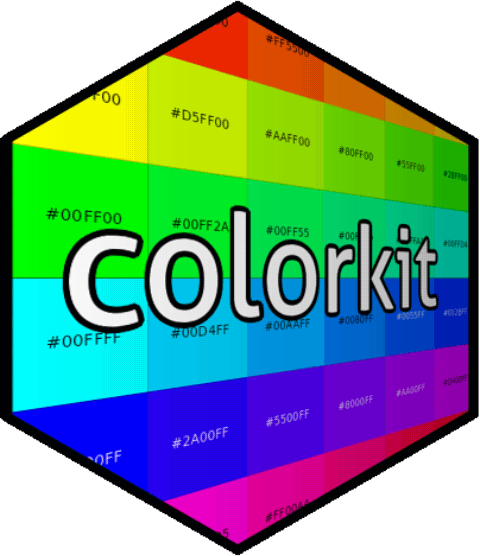

Visual test for color support in the R console
Source:R/console-color-test.R
console_color_test.RdDetermine, by visual inspection, if the R console supports 256^3 true colors,
256 ANSI colors, or 8 ANSI colors. For each of those color levels,
console_color_test() prints both a rainbow and a greyscale gradient.
If the gradients for 256^3 true colors appear fairly smooth (without banding), then the console supports 256^3 colors.
If the gradients for 256 ANSI colors appear fairly smooth (though not as smooth as the 256^3 true color gradient), then the console supports 256 colors.
If the gradients for 8 ANSI colors show 6 distinct rainbow colors in addition to black and white, then the console supports 8 colors.
See also
print_color() for printing colors in the console.